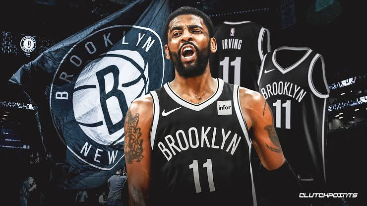

|

|
Kyrie Andrew Irving (kyrie born March 23, 1992) is an American professional
basketball player for the Brooklyn Nets of the National Basketball Association
(NBA). He was named NBA Rookie of the Year after being selected by the Cleveland
Cavaliers with the first overall pick in the 2011 NBA draft. A six-time NBA
All-Star, Irving was selected to the All-NBA Third Team in 2015. He won an
NBA championship with the Cavaliers in 2016.
|